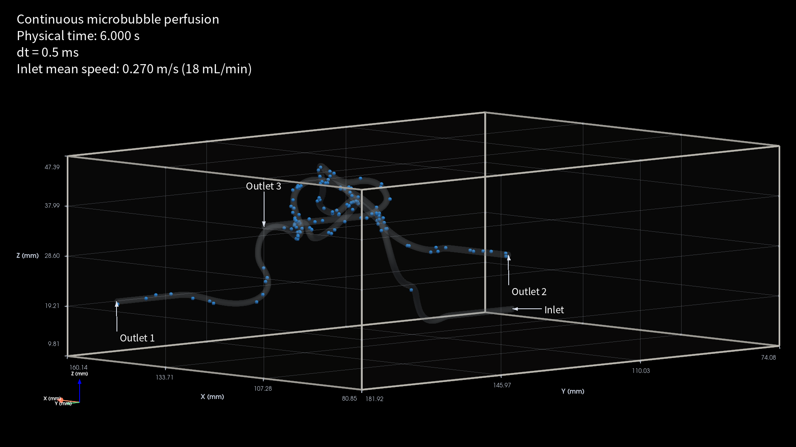
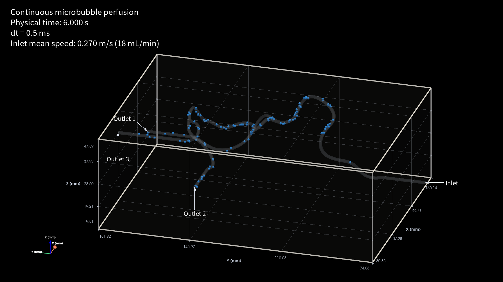
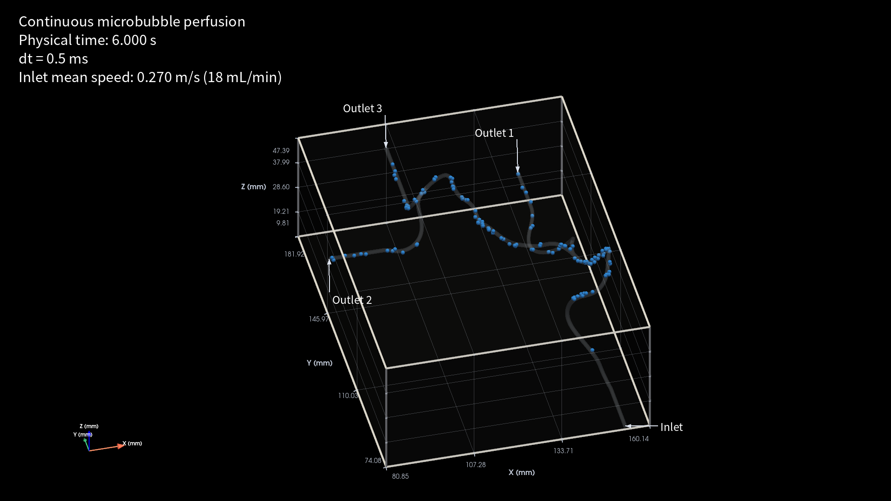
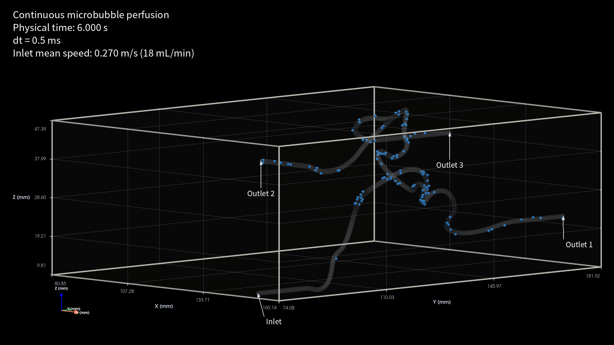
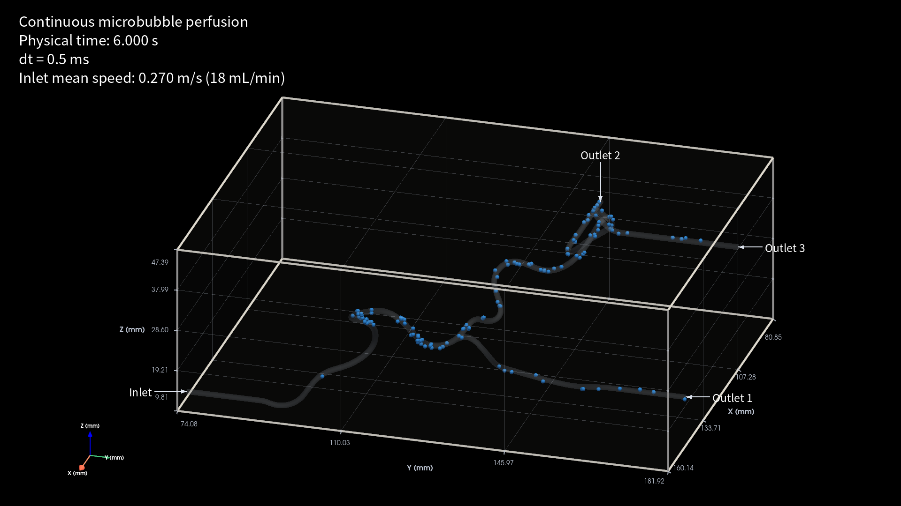
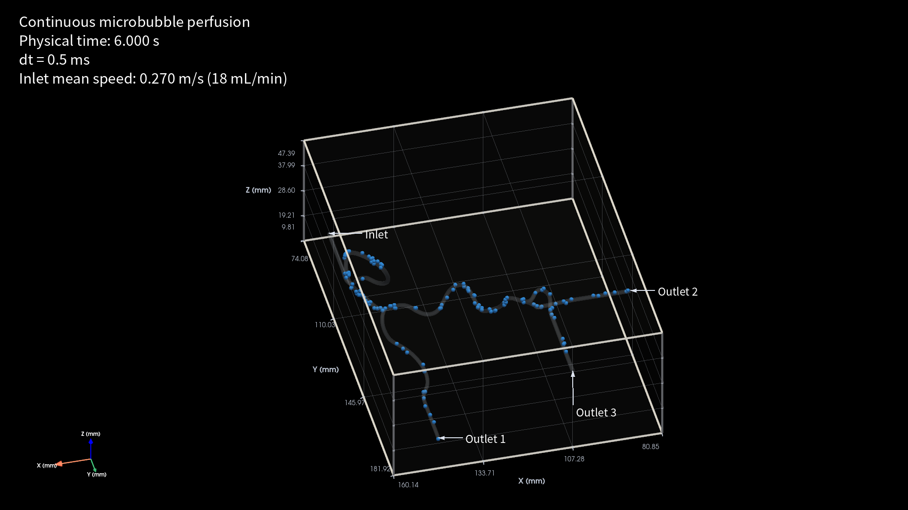

White frame. Same recorded positions and selection in every view. 124 particles displayed. Known solver-failure / numerical-risk tracks are hidden, together with particles whose time-averaged speed is below 2 mm/s in the 5.95–6.05 s window.
Display filtering only; raw data are unchanged. Selection and speed values · Provenance





